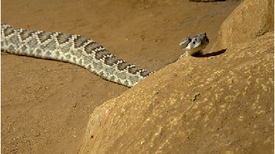
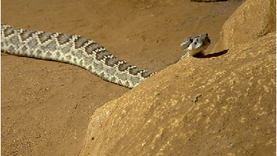

Rattlesnake
What do They eat?
Against of what most people might think, rattlesnakes are not aggressive animals. Usually when someone is bitten by one, it was probably inadvertently stepped on one. But what they usually like to eat are small rodents and lizards. They basically lie in and wait until a victim comes along. They have five-tenths of a second speed when they strike.
Its venom has paralyzing properties that paralyzes the prey which they swallow whole starting by the head. Rattlesnake’s digestion takes several days, meanwhile they hide until the digestive process is finished.
Rattlesnake’s venom is rarely fatal to humans but it demands treatment. Their venom is potent and composed by hemotoxins. The symptoms are tissue and muscle damage, internal bleeding and extreme pain around the injection area.
Some rattlesnakes have venom with neurotoxins properties which attack the nervous system. The symptoms can include problems with vision, difficulty swallowing and speaking, skeletal muscle weakness, difficulty breathing, and respiratory failure.
How do they bite?
Their fangs are called Solenoglyphous which is attached to the jaw by a hinge that allows it to fold back when the snake closes its mouth.